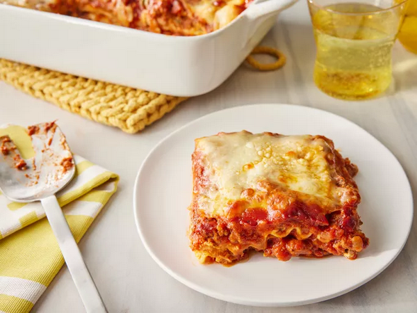

Lasagna

World's Best Lasagna
This lasagna recipe takes a little work, but it is so satisfying and filling that it's worth it!
Making lasagna can be time-consuming, but the results are well worth the wait.
You'll find a detailed ingredient list and step-by-step instructions in the recipe below, but let's go over the basics:
Ingredients
- Meat: This super meaty lasagna has sweet Italian sausage and lean ground beef.
- Tomato products: This super meaty lasagna has sweet Italian sausage and lean ground beef.
- Sugar: An onion and two cloves of garlic are cooked with the meat to add tons of flavor.
- Spices and seasonings: This lasagna recipe is flavored with fresh parsley, dried basil leaves, salt, Italian seasoning, fennel seeds, and black pepper.
- Lasagna noodles: Use store-bought or homemade lasagna noodles.
- Cheeses: Parmesan, mozzarella, and ricotta cheese make this lasagna extra decadent.
- Egg: An egg helps bind the ricotta so it doesn't ooze out of the lasagna when you cut into it.